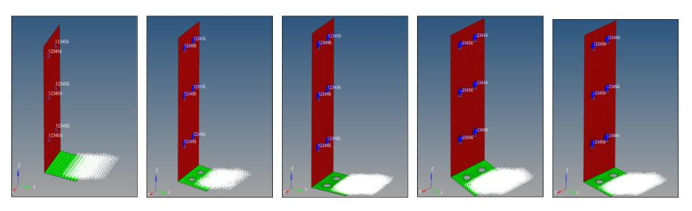
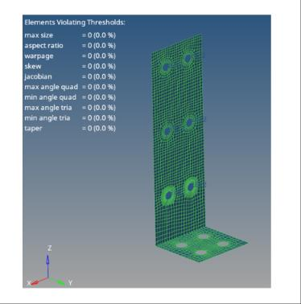
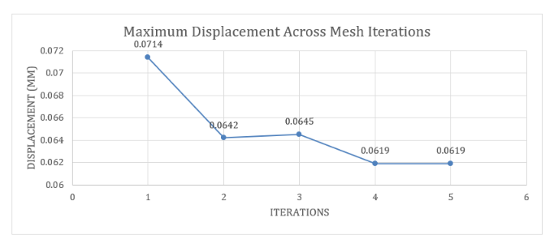
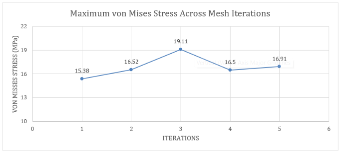
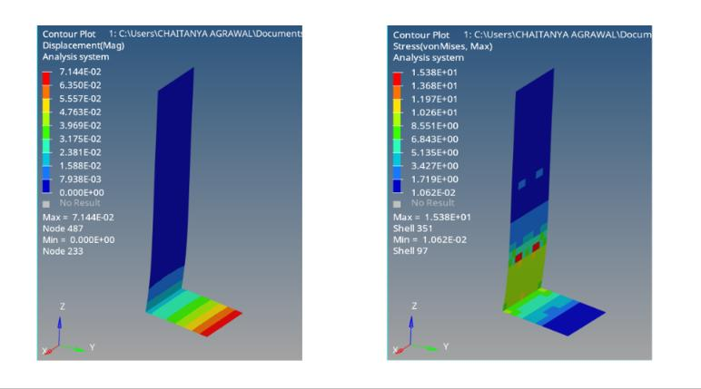
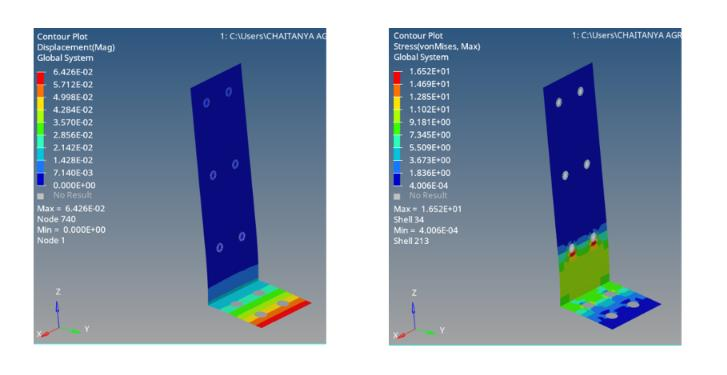
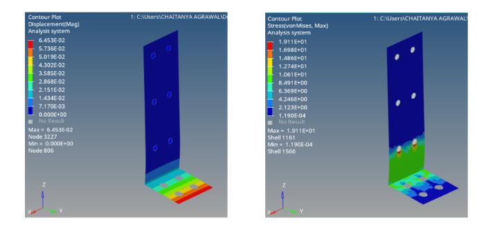
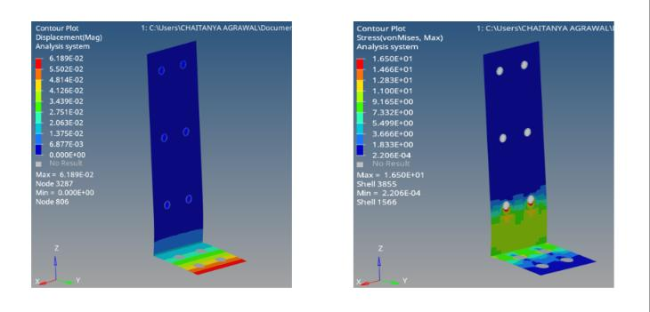
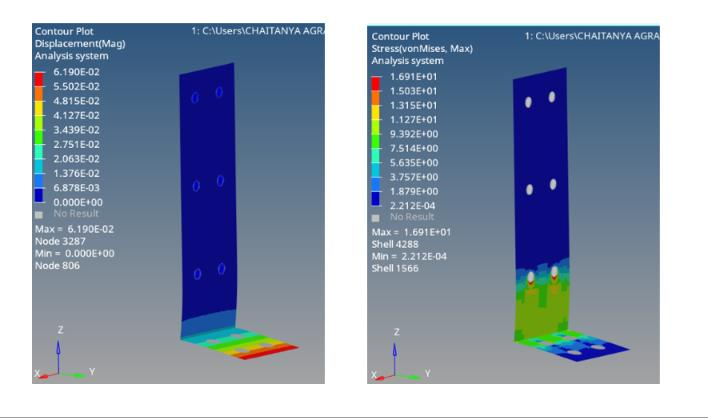
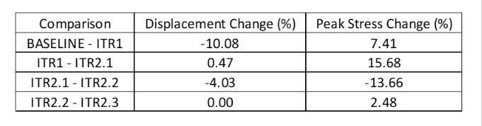

L-Bracket: Linear Static Analysis & Mesh Sensitivity
Using HyperMesh, HyperView and MSC Nastran · SOL 101. This page presents the report content directly as a readable web case study, including the project scope, setup, iteration data, figures, verification checks and conclusions.
Technical report content shown on-page
Executive summary
This case study documents a finite element workflow for a generic perforated L-bracket. A STEP-based CAD model was prepared as a 2D shell finite element model, assigned an elastic stainless-steel material representation, constrained and loaded, and solved using MSC Nastran linear static analysis (SOL 101). The work includes global and local mesh iterations, inspection of displacement and von Mises stress contours, and force/moment equilibrium checks.
Across the reported iterations, maximum displacement ranged from 0.0619–0.0714 mm. The reported peak von Mises stress ranged from 15.38 to 19.11 MPa. Local refinement around the washer/mounting-hole region changed the reported peak stress, highlighting the importance of assessing local stress sensitivity rather than relying on a single coarse-mesh result.
Project snapshot
| Item | Current project information |
|---|---|
| Component | Generic perforated L-bracket |
| CAD format | STEP (.stp/.step) |
| FE idealization | 2D shell mesh |
| Solver / solution | MSC Nastran, SOL 101 linear static |
| Material | Stainless steel 304 |
| Reported applied load | 500 N resultant; workbook indicates −500 N with +500 N reaction |
| Reported applied moment | Approximately −33,800 N·mm, balanced by +33,800 N·mm reaction in later iterations |
| Global mesh sizes | 10 mm baseline; 5 mm subsequent iterations with local washer refinement |
| Primary outputs | Displacement magnitude and von Mises stress |
1. Objective and scope
The objective was to build a reproducible structural-analysis workflow for a representative bracket and demonstrate practical CAE skills: geometry preparation, shell meshing, material/property assignment, load and boundary-condition setup, static solution review, local mesh refinement, equilibrium verification, and engineering reporting.
The analysis is linear static and is intended as a portfolio demonstration. The model is not represented as an experimentally validated or production-qualified design. No fatigue, nonlinear contact, bolt preload, plasticity, or physical test correlation is included in the available results.
2. Geometry and finite element idealization
The CAD model is an L-shaped bracket with a vertical plate, horizontal base and multiple mounting holes. The model was converted to a 2D shell representation. Shell elements are suitable for a thin-plate idealization when the plate thickness and shell reference surface are defined consistently and the geometry is adequately represented.

3. Material model
The intended material is stainless steel grade 304. The material properties include:
| Property | Value |
|---|---|
| Young’s modulus, E | 193,000 MPa |
| Poisson’s ratio, ν | 0.29 |
| Shear modulus, G | 74,800 MPa |
| Density | 8e-6 kg/mm³ |
4. Loads, constraints and equilibrium
The model includes constrained support regions and a 500 N applied load as a distributed pressure load over an area of approximately 4100 mm². The (.f06) file records an applied load of −500 N and a corresponding +500 N reaction. Later iterations also report an applied moment of approximately −33,800 N·mm and a balancing reaction moment of +33,800 N·mm.
This is a useful global equilibrium check: the resultant external forces and moments are balanced. It does not independently verify local load transfer, boundary-condition realism, or stress accuracy. The washer-region connection/spider idealization and the precise load patch should be described and kept identical between mesh iterations.

5. Mesh strategy and quality
The initial global mesh size was 10 mm. Subsequent models used a 5 mm global target with additional local refinement around the washer/mounting-hole regions. This is a practical strategy for resolving local gradients without refining the entire component uniformly.

The displayed quality-check report shows zero elements violating the selected thresholds for maximum size, aspect ratio, warpage, skew, Jacobian, quad/triangle angle limits and taper.
6. Results and mesh sensitivity
The following table summarizes the results obtained from the five analysis iterations. The two final iterations retain a 5 mm global mesh and progressively refine the washer region. The exact local target sizes and element counts were not available in the material reviewed, so they are not invented here.
| Iteration | Mesh configuration | Max displacement (mm) | Max von Mises stress (MPa) | No. of elements | No. of nodes |
|---|---|---|---|---|---|
| Base Line | 10 mm global baseline, without washer | 0.07140 | 15.38 | 440 | 492 |
| ITR 1 | 10 mm global baseline | 0.06420 | 16.52 | 580 | 680 |
| ITR 2.1 | 5 mm global; initial washer mesh | 0.06450 | 19.11 | 2248 | 2463 |
| ITR 2.2 | 5 mm global; local washer refinement | 0.06190 | 16.50 | 2392 | 2607 |
| ITR 2.3 | 5 mm global; further local refinement | 0.06190 | 16.91 | 2680 | 2895 |


The maximum displacement across the five analysis cases ranged from 0.0619 mm to 0.0714 mm, while the reported maximum von Mises stress ranged from 15.38 MPa to 19.11 MPa. In the three 5 mm global mesh cases, the maximum displacement decreased from 0.0645 mm in ITR 2.1 to 0.0619 mm in ITR 2.2 and remained unchanged to the reported precision in ITR 2.3.
The reported peak stress decreased from 19.11 MPa in ITR 2.1 to 16.50 MPa in ITR 2.2, before increasing to 16.91 MPa in ITR 2.3. This is a 2.48% increase between the final two iterations. The results indicate that the global displacement response is relatively stable in the final cases, while the peak stress remains sensitive to local mesh refinement. Therefore, the available results do not establish full convergence of the peak stress.





7. Verification and interpretation limits
| Check | Evidence |
|---|---|
| Global force equilibrium | Reported applied load −500 N; reaction +500 N |
| Global moment equilibrium | Later iterations: approximately −33,800 and +33,800 N·mm |
| Mesh quality | 0 elements reported violating selected thresholds |
| Mesh sensitivity | Five iterations with global and local refinement |
| Material/property consistency | Grade 304 intended |
The reported contours are numerical outputs for the stated idealized model. The maximum displacement and stress should be interpreted alongside deformation scale, shell surface recovery, load-transfer method and boundary conditions. The analysis is not a substitute for detailed bolted-joint modelling or test correlation if the bracket is intended for a real application.
8. Conclusion
In this project, I modelled an L-bracket using 2D shell elements and performed a linear static analysis in MSC Nastran (SOL 101). I started with a 10 mm global mesh and then used a 5 mm global mesh with further refinement around the washer regions to see how mesh size affected the results.
I checked the applied loads and moments against the reaction forces and moments to verify the overall equilibrium of the model. I also compared the displacement and von Mises stress results from the different mesh iterations. The maximum displacement in the final three iterations ranged from 0.0619 mm to 0.0645 mm, with no change in the reported value between the last two iterations. However, the maximum stress near the washer region changed from 16.50 MPa to 16.91 MPa after further refinement.
From these results, I found that the displacement response became relatively stable in the final iterations, while the peak stress was still affected by local mesh refinement. This helped me understand why it is important to check mesh sensitivity, particularly around areas of stress concentration, rather than relying only on the results from the initial mesh.
Overall, this project gave me practical experience in shell meshing, setting up and solving a linear static analysis, refining the mesh, checking equilibrium and interpreting FEA results. Although the displacement results were stable in the final iterations, further refinement and stress comparisons at consistent locations would be needed to confirm convergence of the peak stress.
